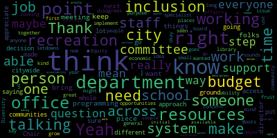
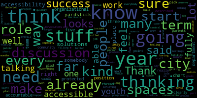
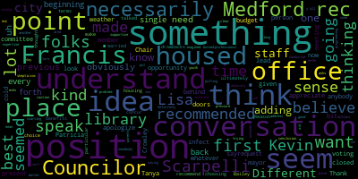

[Scarpelli]: You want to turn your... You can hear me? Yeah. Zach, now I know exactly how you feel. So powerful.
[Adam Hurtubise]: Just swing the gavel down to the right, not the left.
[Scarpelli]: I won't. Well, good evening, everyone. Thank you for joining us this evening for our subcommittee on education and cultural committee today, February 25th, 2025. Will our clerk call the roll, please?
[Adam Hurtubise]: President Bears. Present. Councilor Callahan. Present. Vice President Collins. Present. Councilor Tseng, his informant is gonna be a little bit late. Mr. Chair, Scarpelli.
[Scarpelli]: Present. Okay, four present, one showing up soon. Let's move forward if we can. So this is, we're here to discuss Resolution 25-027, Resolution to Discuss Recreation Department Programs for Youth with Disabilities. Be it resolved that the committee on education and culture schedule a meeting on February 25 at six o'clock city council chambers, the committee will discuss the needs of the recreation department for the upcoming budget season, and the committee will also discuss the recreational programs involving our disabled community if I can, if you can all allow me. I would like if my fellow Councilors, because the parents are the reason why we're here, I think that it would behoove us to have them speak and just share with us because part of this discussion is starting a new slate here at Medford with recreation, our leadership team, and looking into making sure that we have a partnership with our parents, the recreation department, and the city leadership to make sure that we can follow through for our wishes for our families, disabled families here in Medford. So would anybody like to kick it off? Come on up. Hi. Name and... Nice to see you, my friend. We sure do.
[Bears]: You're up.
[Tanya Sullivan]: I'm on. Oh, I'm on. All right. So I kind of wanted to kind of give a little synopsis of the vision of it through parents' eyes. And I know that you have heard a lot of this, but I've been a parent now from toddler to elementary to middle to high school to transition program and forward. So as far as, you know, I know the conversation was that Medford didn't really offer a lot of activities for our kids. A lot of our kids have to go out of town to be able to participate in activities, as my child did. And even with you, George, we went to Summerville, and it was an amazing program. And I'll never forget that. That was awesome. But I want to just I want to take a minute to be honest, when our kids currently participate in inclusive activities in Medford, it's intermittent best it's when the supports are available. And it's often taking part in a peripheral manner kind of like a parallel position. So the full inclusivity would be our kids participating as all the other kids do because the necessary supports would just automatically be there in Medford, right? And that's our goal. That's what we want and that's what we're working towards together as a team. We're realistic. We know how hard it is to get sufficient staff and train them. and it doesn't make it any less important and it doesn't provide a reason for us to need to be grateful that Medford tried when the support staff or training isn't there. As an example, if a business is putting out a product, right, for a customer and that product or the way it's produced or the timing doesn't work, The customer work for the customer. The business doesn't say, well, we tried. They make the necessary changes to modify the product or its production so that it works for everyone. In simpler words, when a flower doesn't bloom, you fix the environment in which it grows, not the flower. With all that being said, Our thought about placing the citywide inclusion specialist under med rec because the position needs to be housed somewhere is a little bit low key pigeonholing those services to mostly recreation, which is obviously like a really small part of the city experience and the small part of the city that would get to realize the improvements as opposed to citywide by definition. And while not trying to sound ungrateful, We as parents don't always wanna have to be grateful that there are programs for our kids in Medford, it should be a given. My kid turns 21 in three weeks. So I am now kind of past the med rec perspective. So a lot of the activities may not be of interest to him at this point and that's okay because a citywide inclusion specialist would make other aspects of the city more inclusive for people his age and older and for what they might like to do. The initial request was for an inclusion specialist for the city. to look at recreation, transportation, the library, the post office, restaurants, grocery stores, police and fire stations, hospitals, banks, art centers, places of worship, parks, pathways, ponds, voting centers, city council and school committee meetings, celebrations in Medford, Medford events, venues with live entertainment, local craft fairs, holiday celebrations, farmers markets, employment opportunities, just to name a few. And basically every aspect of what makes a city a city, right? We would ask that there be more options provided for where the inclusion specialist can be housed. As we know, MedRec is not the only department available. And because our kids with disabilities grew up to be adults with disabilities, wouldn't it be great if they could navigate the city more easily because the inclusion specialist helped in all areas for all stages of life. Thank you.
[Scarpelli]: Thank you.
[Patricia Cherry]: Patricia Cherry, I know we have had multiple conversations and I am so appreciative like you are just so enthusiastic and wanting to get out there and wanting to help. And this is this is my first time working with you. And I'm super excited about everything that you had spoken about. It's just that we're a little bit nervous because where you're trying to bring it back to is someplace that we didn't have great success at. And we did reach out, we did try. I know there was staffing issues. We would try to reach out and try to set something up and let's get something going and we can help here and we wanna do. And there was just no want or desire there. And we're just afraid that we fought this hard to get this position even spoken about, that we want to get it right. We don't want it to be just another 3 to 4 PM on a Saturday program. It needs to be bigger. It needs to be citywide. So that's where we're at.
[Scarpelli]: All right, thank you.
[Alexandra Lauric]: Yeah, I want to stress that. Name and address. Alexandra Lorig, station manager, 75. I just did. I just want to say that we are really looking and we really need a citywide position because our experience is that when we talk with people and ask, they really want to help. And one example is the library. We went and had discussions with the library administration and some of you joined us. I don't know if people know but based on those discussions and the fact that the library really wanted to help us, the special education in school, the school special education department went to the library, and they had A training, yes, on disability awareness. And then the library now, if you are applying for their programs, there is actually automatically they're asking you, do you need accommodation, which is an amazing thing that happened because of this advocacy. So what I'm trying to say is that this person needs to serve different spots in the city, not only the recreation. We need them at the library. We need them in different places and we need all the people who want to help our community and organize things for us to have access to this person. Thank you.
[Tanya Sullivan]: And the last thing that I want to say, do I have to say my name again? No, no. Okay. The last thing would be just, just a reminder that we have people with disabilities in this city from zero to 99. Yep. That's it.
[Scarpelli]: Thank you. So I, I, I think that I appreciate, um, I appreciate the discussions we've had. Patricia, I appreciate what my fellow colleagues, I know that Councilor Callahan and Councilor Leming really took the leadership role with this and moving it forward. So, and then coming out that evening to bring this forward. Now, as I will speak as a City Councilor for the City of Medford, who is the chairperson that brought a full-time recreation department to the City of Medford. When we started that program under Mayor Burke at the time, we really wanted to focus that when we started, it was really a very thin program when it talked about staffing, funding. It was really supposed to be a self-sustaining program. And as we move forward, we were supposed to have been growing with our community and enhancing programs like we're talking about tonight. We're in a position I think that where we met the city council and all of our council members felt that we felt strong so strong about this that looking at that position is very important in our community. But the, the recreation department is that department. Like I said, we might not have been happy with how things have gone in the past, but I think that I can speak of what I've seen as a resident of Medford is that we've had some hurdles because of limitations. And this is why starting this meeting off right and saying, OK, having our programs, having a leader like Kevin, working with a parent organization that we can craft together, and then work for zero to 99. Because that's what the recreation department's for. The recreation department isn't about sports. I know, unfortunately, it seems like it's been the Saturday three o'clock to four o'clock program, but I think tonight you'll hear some pretty exciting stories and plans that we have to move forward with, not just sports programs, but other programs that we're looking to enhance our programs for our families. But being a city program, a city department, we're that conduit to the library. We're the conduit to the schools. We're going to bring all that together. So at least that's how I feel. I'll call on my colleagues, but if we can, I think you have something to add. Sure, yeah.
[Tanya Sullivan]: Tanya Sullivan, 19 Brackett Street. I would like to kind of get clarification. If that's the only place where this inclusion specialist can be housed, how will the funding filter and how will the time filter for different parts of the city, and not just recreation. Like I had said before, I want to make sure that we're talking well-rounded inclusion specialists. Can people with disabilities get to this room, and can they understand what's being said, et cetera? So just looking at all aspects, and I understand what you're saying, that that position needs to be housed somewhere. What are the other options on where it can be housed?
[Scarpelli]: Again, right now this is still a position that we have to petition to the mayor and go through the process, and hopefully that's going to be part of the discussion as we move forward where the mayor is the ultimate authority in the city deems to be. So I think that's going to be important. But I think tonight is really just have that discussion to get all that information out that then we can report back to the mayor and the council and we can move forward.
[Tanya Sullivan]: I think, yeah, I think that's great, George. Thank you. We just want to know that there are options and who has the final say, and we just want to make sure that, you know, after years of, you know, being in an afterthought position, we want to make sure that we're doing this right and that we're guiding you guys as well. I agree. In the right direction.
[Scarpelli]: We appreciate that.
[Patricia Cherry]: Okay, thanks. And to add to that, we also wanna make sure that when this is done, there is accountability if it doesn't go right on where the parents have some, what happens a lot with us is we're told, okay, this is the program we can run, this is what we decided is best, and this is what, you don't know what's best.
[Scarpelli]: So again, I'll say it again like we started, that's yesterday. The hope is as we're here tonight, the hope is that we, I'm a program developer for a city that gives me the opportunity to do a lot of great things. But we know we can't, I don't make the decisions, because I don't know what different demographics need in our community. So this is where we are today. This is where the start, it's going to be the start, at least how I feel, is the start of something amazing where parents will work with the recreation department, the leadership team there, and whatever piece we do get, and move that forward together because we can make, we're not, at least I, as a city councilor, I'm not going to do a program just to check a box. That's not, that's not the way I do things. We're not checking boxes. That's why we're doing this. That's why we're having this meeting.
[Unidentified]: Okay.
[Scarpelli]: All right. Thank you. So I know that Councilor Callahan, uh, and then Councilor
[Callahan]: Thank you. So, I appreciate so much that you're here again, I was there at the library with you and I was with, you know, with one of your very first meetings with Councilor Leming. I, I really have heard from you guys very clearly that this is not about just rec programs. I loved the way that you phrased it about it including restaurants and places of worship and meetings and events, live entertainment, holidays, employment, the library. There's so many things that we could be doing. My volunteer team has found a volunteer who is a specialist in special ed, both in her work and in her education. And what I'm hoping we can do is set up a meeting where the group and this volunteer and I can all meet together because I believe that she has volunteered to do 20 to 40 hours over the next few months, and budget season is coming up. So if she can pull on all these threads and find out and do the legwork that the mayor is gonna want to hear, about what this is actually going to look like. She can do that. She wants to volunteer to do that, then we'll be able to have something that is much more concrete for the mayor to approve of in budget season. So this is where I think this volunteer is going to be really incredibly helpful. is to hear all of the ways, all of the ideas that you guys have and the ways that Medford could be like this, you know, the inclusion specialist that you want to be housed somewhere in the city, the ways that that person could bring these kinds of activities. And that way, she can do the legwork to ensure that the mayor feels comfortable with funding this position and also where in the budget and where this person should be housed. I think having that volunteer do that legwork before budget season is the way that we're gonna be able to have this placed in the best place that you guys feel comfortable with it being funded in the city of Medford.
[Scarpelli]: If you can.
[Callahan]: Well, I think my suggestion has been that we meet with her. Well, I would love to see her here. I don't know if she's coming tonight. I think we need to have like a deeper, like her hearing this meeting would be great, but having a deeper discussion where she can really dig in and ask tons of questions to you guys, that's going to be a lot deeper than this meeting. Great. But let's set up a meeting where I can be there, she can be there, we can make sure that we get this off. Okay.
[Scarpelli]: All set? Yeah, thanks. Thank you. Council Beas.
[Bears]: Thank you, Mr. Chair. Yeah, I mean, I think what we're talking about here is continuing an effort that has borne some fruit and needs to bear more fruit. I think ideally, right, we would have enough of a budget where you could have an inclusion specialist in all the relevant departments and someone to coordinate all of them. That's a system that I think everyone would support because you'd have the level of resources that, quite frankly, other communities have, neighboring communities, but those are also communities with more money in their city budgets. And I think sometimes when we have these conversations about addressing urgent needs and where the resources should be placed. You know, I don't think anyone disagrees that the Recreation Department needs more staff and support. I don't think anyone disagrees that we need a citywide approach and citywide staffing to address inclusion. But I think the question is, what is the system that you build with the resources that you have now that is a foundation? And then what How do you then grow that with more resources. I don't have the answer to that question, but I think that that is the path, that's the way like I would like to think about and frame it. on the issue of inclusion, maybe starting with someone in the inclusion office or someone in the mayor's office that has that citywide scope. If we're talking about, there's only one person that this budget's going to be able to support in addition to who we have now, that to me might be the approach because then you have someone who could work with recreation library liaise with the schools, work with other offices, and identify, okay, we really need this type of support staff in this department. This department maybe doesn't need a whole staff person, I can work with them. And you can flesh out that person, their role would be to work across all of the departments of the city and work with the private businesses and the other agencies of the city. to maximize the impact. And I think that would be something that I would be interested in looking at. And that's not to say I don't think that the Recreation Department budget is too small, because I definitely do think it's too small. If we can find a solution on both of those questions this year, or some step forward on both of those questions this year, I think that's great. But when we're talking about Access to job opportunities for adults with disabilities access to economic opportunities in general, when we're talking about programming and resources that goes beyond the school department school system. It just seems to me that someone who could bring together. all of the different parts of the city who could be working with the economic development director and the recreation department and the school system and the library would be the staff person to start with, but.
[Patricia Cherry]: You know, okay. Cause this is what we get a lot too. Okay. Well, I found this really great group and here's the link.
[Unidentified]: Yeah.
[Patricia Cherry]: that we get that all the time. We don't want that either. It doesn't need to, we already have an inclusion specialist that we got from the school committee that's going to be hired for next year. So it would be somebody in addition to work with them.
[Bears]: Right.
[Patricia Cherry]: So we're talking about someone who's on the ground. Yeah. Boots on the ground.
[Bears]: Boots on the ground who can be moved. But the concern then being if it's housed in one department, are they spending 90% of their time on that when maybe Yeah, I'm not saying on purpose, just because of the inherent nature of the structure, right?
[Tanya Sullivan]: Yes, yes. And so that's our concern, where that's been a pigeonhole. Whether it's intentional or not, mostly not, if that person is housed there, that's where they're going to be, and that's where most of the focus is going to go. And if you're looking at the percentage of folks in the city that have disabilities, are you really helping everybody, or are you just helping kids be able to play peripherally?
[Bears]: Right.
[Tanya Sullivan]: If the supports aren't there. And I'm not like, I know that what you're doing, George, because I have nothing but amazing things to say about the programs that you run. We want to make sure it's not a managerial position. We want to make sure it's housed in a place that isn't pigeonholing it. We want to make sure that we have a seat at the table so that we know when the funds filter down and when the timelines filter down. Like, is time being spent in the community? Is time being spent in this? Is time being spent in the parks? You know, if they have an Easter egg hunt at Cornwall Stadium, can somebody in a wheelchair, you know, go hunt for Easter eggs. So just like, you know, there's so many different aspects that an inclusion specialist needs to address in Medford. Let's be honest.
[Patricia Cherry]: There's also, there's a lot of people in this city that, as she can tell you, because we took her and Matt on our journey with us, where they thought it was just gonna be, they told us, oh, just go to the library. I'm sure they can host this for you. I said, okay, come with us. We got to the library and they figured out really quick that, oh, it's not that easy, you know? But all these places want to help. But there's nobody to get all these places together to help.
[Tanya Sullivan]: And there's nobody to guide them on how to do that. And so that's more of.
[Patricia Cherry]: So why we want to be an inclusion specialist at the med for rec. Okay, well, they also going to be able to go over to the library and spend some time over there and help them figure out some of their programs. Would they also be able to go down to talk to the inclusion specialist that's going to be hired next year at the public school and say, okay, how can we coordinate some of that type of
[Tanya Sullivan]: are they going to be able to go to Temple and see if there needs to be somebody doing sign language? I mean, there's just, it's vast. And when you're a parent of it, it's all you think about. We have resources up the wazoo, but resources don't do a lot of them for anything.
[Bears]: This is why we're here. And I wonder, to that point, we have the Diversity, Equity, Inclusion office. And I think the purpose of that office is to be across the city, right.
[Patricia Cherry]: It is to be across the city and she's wonderful with resources. She's wonderful with resources. She sends me a lot of resources. Yeah.
[Bears]: And I'm wondering if that's the next step. I'm putting it out there. I'm not saying make the None of us, we will all work together to get someone else to make a decision.
[Tanya Sullivan]: I think as long as we have a seat at the table and helping to decide or see where the inclusion specialist ends up being housed, that's what's important to us. And only because, you know, we've, this is not our first rodeo.
[Bears]: Yeah, no, I get it. And the reason I bring up that office though is that You have a manager of the office who has access to a lot of resources, but not a lot of ability to implement on the ground because the staff isn't there. But you also don't have, if it sounds like a concern, I don't want to put words in your mouth, of wanting this person to be able to go across different programming. And I bet REC could use a full-time person 100% of the time for inclusion specialists, but the issue being if we only have one. It doesn't hit all those other things. So that's why I just throw out that idea, because it is kind of, in a sense, I think the office is intended to be that office that can go across.
[Tanya Sullivan]: I think that's a great suggestion. And this is kind of the back and forth that we want to have, the conversation that we want to have, because there are other places to house that position. And I think that That's a great thought. Now we have the DEI department. So, you know, let's let's think outside the box, even more.
[Bears]: And I know for one of Frances's biggest things talking to us, budget season or otherwise is, I'd love to be doing all this other stuff, but I feel like all I can do is give people, point them in a direction. Right. And I think too, right, we have also, you know, someone to loop in here would be or to think about too is the community affairs director Lisa in the mayor's office.
[Patricia Cherry]: And that's why if you get the right person that's as enthusiastic as us parents are, that person will tie all these people. It'll be so easy, but it has to be the right person. It has to be a person that is wanting to get all.
[Bears]: And I'm just thinking off the top of my head to your point about manage versus like ability to implement and put the boots on the ground. you know, you have the director of diversity, equity, inclusion of director of community affairs, they have that kind of they can do the management piece. And then, you know, have this person be able to be not doing all that.
[Patricia Cherry]: And that's our only concern is that if it's just with. Is that person going to be allowed to go out and do these things in the community? That's the concern we have. Is it going to fall into the parameters of the position being held? You bring up great questions. In that position, that person being told by their boss, oh no, you can't go do that. We need you here.
[Scarpelli]: That's the concern. You're bringing up great questions. That's what we hear. These are the things we want to hear. And Adam takes great, great notes, and we're going to break it down. Thanks, Adam.
[Bears]: But yeah, to that point, I think structurally right, even if you're allowed, you could use the whole time just on one department, right?
[Tanya Sullivan]: You could use the whole time on each one of those departments. And so I know that we're starting with baby steps, so we kind of need to share the wealth. We don't want to get so awesome at recreation and everything else is not awesome.
[Unidentified]: Right.
[Tanya Sullivan]: Everything else is not even close to awesome.
[Unidentified]: Right.
[Tanya Sullivan]: We want to move the needle, but we want to move it for the city of Medford, not just for this age group. Yeah.
[Bears]: Yeah, and I think we've seen across the board.
[Patricia Cherry]: Yeah, I mean so let everybody else talk.
[Bears]: Yeah, I just I just want to make the point that I think across the board it's like we've seen places of success and then places where they've been letdowns right and I think that's the, if we're not spreading the system, I'm sure more letdowns than not right and I'll let you know how it goes in adulthood. Yeah.
[Tanya Sullivan]: I'm there.
[Bears]: I mean that our first meeting we were talking about. jobs, you know, what does it mean for someone to be able to have, you know, not just a job, but a job with a pipe, a pipeline and a growth opportunity to be able to live in Medford for a long time.
[Tanya Sullivan]: All kinds of conversations. We want to have job carving at like the police station for volunteer visit. Like there's, I mean, there's so many, all right, there's endless ideas. So we'll let you go. Thank you.
[Bears]: Thank you, Mr. Chair.
[Scarpelli]: Thank you. Councilor Collins.
[Collins]: Thank you. I'm just so glad we're having this discussion. And I think a lot has already been said about the point that I was kind of the thread that I was going to pick up next, which is, you know, I feel like the parents and the advocates in this discussion have described very, very clearly what success looks like. And we are really far way away from that because what you're talking about is a fully accessible community. The fun stuff, the programming for youth, and the boring stuff and the stuff you have to do and the stuff that everybody has to do. You know, the events, the job pipeline, meetings like this, as well as the festivals. And we know how far we are from being able to We know how far we are in terms of capacity and people who are able to in the scope of their work in the city be laser focused on making sure that we start filling every one of those many, many, many gaps where we're not thinking about accessibility in all of these spaces. And I feel like our discussion is going in the right place and that we're thinking about what solutions can we On board for families and youth and all people quickly like what solutions, can we work on this year and this budget cycle to start things getting better and I think it's so important to make sure that we're. when we're talking about a staff person or in how we're just framing this conversation overall to make sure that we don't lose sight of what you all know that real success looks like, because that has to be the yardstick. And if the yardstick for that is there's somebody central to the city's organizational chart that is holding every department and every venue accountable, even private spaces accountable to feeling fully accessible, that needs to be protected position and we need to build to a place where we can have somebody who's going to ensure that that's the case in all departments and all spaces. There's liaison for public businesses. And so I agree with everything that's been said. I think that we're thinking about this in the right way. And I think that we makes a lot of sense to be thinking about this in terms of short term. What can we do this year and what has to happen this year to kind of start that larger snowball in motion? Like what position do we need to get into the organizational chart this year that in five years is going to be a team of three and five years after that is going to be a team of 10. I wish that we, you know, obviously we would all like that in three months, we'd be achieving these goals because this is stuff that people deserve already and have deserved already and we know that that would be naive to say that that is possible because we have such a long way to go. But I do think that part of this process needs to be some role or some type of project that is around kind of like an instant a, uh, a master plan for accessibility in the city, and I'd love to see that, um, not rolled into the boots on the ground implementation role that you're speaking about, because that's different. Um, but I think that that has to be a protected mission statement in one of these roles as well. Thank you.
[Scarpelli]: Thank you. Um, if I can't, uh, We call on Councilor Leming, who's from Zoom.
[Leming]: Thank you, Chair Scarpelli. I understand that I'm not a voting member of this committee, so I do appreciate being given the opportunity to speak. I'd also like to apologize to folks, because I'm not there in person. I'm a bit under the weather now. don't want to infect anybody with whatever cold I have. But so I just like to say first that to Tanya's point that, and I understand Patricia was present for a few of these, but a lot of the conversations about where this could be housed were had behind closed doors. So I think the first idea was the library, which did lead to the meeting with the folks at the library thinking that we could, like thinking we could request to have them budget for more positions there. Then they recommended to look into Francis's office. And I believe there was some conversation between the mayor Lisa Crowley, I believe, and Francis about where something about the best place something like this could be housed. And ultimately, I did speak to Lisa about this and she did recommend and she recommended she thought that the position in Medford rec made the most sense, which Kevin Bailey did seem to. did did seem to concur with like just in terms of what was being talked about at the time that just kind of seemed kind of seemed like it made the most sense so a lot of the Reason for choosing that is like I'm not necessarily married to the idea of this position being in Medford rec but it was the idea that at some point you do have to make a choice and that there's going to be Different benefits and drawbacks to housing this position in any particular place So if somebody does want to have those conversations with city staff again, and they come to a different conclusion that it's best housed in Francis's office, then that could be a better pressure point to have. But the conversations I had did seem to indicate that adding a that adding one or two positions to Kevin's office would be sort of the most conducive to what they're trying to do. I I think that I can definitely understand where the caution of some of the parents are coming from because, you know, obviously when you've been doing advocacy for as long as y'all have and you've been burned by like, you know, previous Councilors and previous city staff and like I could understand the skepticism. But I do think that the asks that we have for starting this do need to be clear. And this is also something where I do defer to Councilor Scarpelli's expertise, because I mean, this is something where he is uh a professional in this area like this is what he does for his day job like he does youth programming and he seems to be supportive of the idea of putting another position uh under medford rec to aid this um As Councilor Collins was saying, this doesn't necessarily have to be where something like this ends. So it could just be imagined at the beginning. And when we're beginning something, we're not necessarily going to solve every single problem or address every single need at one time. But I do think that this is a good place to put it. But obviously, I'd like to have more back and forth. I don't I welcome more back and forth on this.
[Scarpelli]: Thank you, Council. I know I know everyone needs to talk but I know that we have councils that I We only have about 15 minutes left, but I know that we wanted the director also to share some information. So if you have, if you have anything time.
[Tanya Sullivan]: I just wanted to make a point that when, when he was speaking, that he, what he had said was they decided that behind closed doors and we just want to seat at the table. And I'm just reiterating.
[Scarpelli]: I agree. Councilor Tseng, you had your hand up.
[Tseng]: I think part of what I'll say will depend on what we hear from the directors. I'll hold that. But I think in general, I just came in in person, but I was on Zoom the whole time. It seems like this master plan is really important to making sure that we have a position that doesn't only work in one department, but can work cross departmentally. Perhaps we look at job descriptions in that as well, making sure that we write into the job description that this person will be collaborating with different departments. Maybe there's some level of city council involvement too in ensuring some mechanisms that make sure that we can have that. I think another, you know, when we talk about a master plan too, I think it'd be helpful for us as councillors to look into different municipalities that might have programs that are more effective, that, you know, maybe they're not 100% what we're aspiring for, but programs that are closer to our end goal and to see how those municipalities got there in the first place, looking at, you know, what types of roles did they hire? How did they structure it? How can we acquire the resources and do that planning that we need to over many years to reach that destination. But I can't claim to know that much. I don't profess to know the answers. So I really do want to let the director and let the advocates really speak to this.
[Scarpelli]: OK, so I know we have one more person before Kevin, but you have three minutes to name and address the record.
[Chenine Peloquin]: First, I just wanted to clarify because what I want, I believe in here, I hear and believe in your vision. So, you know, I'm totally on board. But I hear you want if you can't address.
[Scarpelli]: I'm sorry.
[Chenine Peloquin]: What I hear from the families is that they want it to not be a manager position, but they want this person to be on the ground and helping with inclusion at the Easter egg hunt etc, but also doing like job development. So I'd like some clarification because it sounds like this magic person who needs background and employment and rack and. ADA and that. So I'd love some clarification on that vision because it sounds like there needs to be like seven people. So who's the first person?
[Scarpelli]: If I can.
[Chenine Peloquin]: I'm sorry. What's the skill set for the first person? Right. So that's a clarification from the parents. But, but, but, but you're saying not okay if we can, if we can, you're saying not a manager. Um, so I'm, I'd like some clarification there. I also want to know you kind of brought it up a little bit but how does this body envision the intersection with the Office of diversity because Frances is the ADA coordinator, which is an entire job in itself and she's already doing three full time management jobs and she already has said she doesn't have time to do the enforcement, which could be the part of that job that is making sure that these meetings are more accessible to be working with businesses to make sure that they are actually following the ADA. which is the floor, it's not the thing we aspire to. But that also doesn't get an inclusion for people with intellectual disabilities, because the ADA doesn't really touch that at all. And then I also... just that employment is really different than running programs and is an entire skill set in itself. And then I wanted to make sure that this body knows that there's something called the ADA self-assessment and the transition plan, which is kind of like gets at the master plan that you're talking about, but as a legal document that we haven't touched in decades. And Francis and I have talked about getting that out again, but that's again, more like compliance stuff, but we could do kind of a, we need to redo our transition plan as a community. Which is the kind of the long term planning that kit was getting at, but also we need to think about like transition plan plus like what does that actually look like in an ideal situation, not just a compliance.
[Scarpelli]: Thanks. Thank you, Kevin, if you can. And before Kevin starts I think that this is this is good what we're doing is good, because I, from what I see. I'm saying this is two positions. I'm seeing what we originally thought we're coming in for is really putting together programs for our disabled community through the recreation department. But as Tanya started the program and looking at a totality of what we need, this is something that I, this is great to hear where we are. Cause they really think it's two different, two different positions because they think we need that person, but then we need that person with the boots on the ground.
[Bears]: I know we're gonna go to Kevin. Would you mind just hitting the mic for this. It echoes when that one's on. You're good off great. I'm just really quickly I wanted to know right. It sounds like some ideas got thrown around within City Hall and based on the information available at the time, some folks made some suggestions about what might be best. I don't think decisions were made but I also think it's important. that we make it clear that decisions weren't made because of how processes have gone in the past. So I just wanted to put that out there. And I appreciate what you're saying about maybe it's looking like a couple positions. And again, I really think, to everyone's point here, figuring out What is the process for developing exactly what we think is needed as this first initial step and then how that continues to grow and what the accountability system is for that like how are we going to continue to have that conversation, like my mind immediately went to. the discussion we've had tonight into job descriptions, and then to Shanine's point, reasonable job descriptions for people to do, and making sure that we do that in a way where we're going through the process so that everyone is included in the creation of those things. But again, I defer. Thank you for giving me time.
[Scarpelli]: Council President, I had that, as one of my closing comments is gonna be that maybe we need to start two groups. One is a working group that we talk about the greater position and then the more parent group that's working recreation where we are today. So Kev, I know that you've been waiting. I appreciate it. So go ahead.
[Kevin Bailey]: No, you know what? I actually, I just want to thank and appreciate the parents being here. And I know we first talked about how we want to first start off, whether I should be talking first or should we listen to the parents first? And I do appreciate that we had the parents first come up and talk because certainly hearing what the parents are advocating for and what they would like to look for certainly helps out on what this position could potentially look like. I will say and be honest with you, I'm coming here to talk as a recreation director, so I'm going to be talking more about recreation department and what we can do. and what we can help with. We certainly have been doing adaptive and therapeutic programming as best we can. And it is limited, I certainly agree. I think all the parents have very valid points. We are trying to run adaptive, we're trying to do inclusion services. And I certainly will say that there are successful stories to talk about, and there are other areas that we need to improve upon. With that said, probably one of the largest things that I think people have probably heard in multiple discussions. When we try to run our adaptive programs, we are trying to get multitude of volunteers, we get high school students we've worked with Tufts University, particularly with the athletics department to get. different athletes into the program. And that's worked well, but it's a big challenge and it's very daunting. So we've really stayed very small to the parent's point that it is usually only once a week. And that is small and it's a lot of work to do. The second part is getting a good number of participants into the program. And it makes sense. And Shanine, I'm gonna have to give you credit because I know we've had a lot of discussions with this. is that you have a small number of people that are gonna be able to, one, want to take this program or eligible to take the program, and two, to be available like on a Wednesday night at six o'clock and wanna take a soccer program. So it's a very small number. And that's one of the things that we see. Usually we might get five, six people into a program. The other thing I have heard from the parents, and Trish, I gotta give you credit, because I've heard this multiple times different program managers is because we're trying to get a large number of students into that program, we do a very large age range. And most of the time, it's ages 5 to, I want to say 14, correct me if I'm wrong, 18, to 18. It's a very, very large range. But we do that to try to get at least a decent amount of children into the gym and make it full. We did listen to the parents and try to split it in half. And when we did split in half, we just didn't get enough numbers in each group. We actually got no one in one age group and two and another so not enough people to actually run the program. So those are the different challenges that we have. Mr. Scarapelli, I know you've talked to us a lot being the assistant director in Somerville and also working with Malden Recreation. We have talked about this, we've talked about these challenges. And one of the things that I did talk about in our beginning conversations that I've talked about in the past is the way Belmont does their programming. Because Belmont's also a very small department. And years ago, they did work with a, they worked with their neighboring town in Watertown and created the sport program. A little bit different, you know, it's mostly on Special Olympics, and they do some social activities. But I think that's something that we can do as well to try to enhance. So really looking at where our challenges are and where we can move forward. what I want to do, or what we're currently working at, is a tri-city group between Medford, Malden, and Somerville, so that we can run these programs as a rotation. And George, I know you said, Mr. Scarpelli, in the previous conversation, we did talk about it in a previous city council meeting, that It might be difficult to be able to run everything in Metfit, but if we can run it over in Somerville, we can run it in Malden. It's very close and nearby, so we can be able to get the numbers and stay local. So Mr. Scarpelli, myself, and the Malden Recreation Joe Levine have been having some of these discussions. We actually brought this up years ago as well, so it's nice to kind of bring these back up again. And what we want to try to do is first create a parent advisory group. So the idea that we have is having one parent from each city, so Method, Malden, and Somerville have one parent, and have one dedicated employee, whether it's the director, the assistant director, or someone from each city department. So it would be a group of six to be able to start these conversations and talk about what type of programs they'd like to see in this tri-city program. hearing the last city council meeting and listening to the parents, it sounds like it's also not just doing sports, but having social activity. Anyone have heard me early on when I first started in the recreation department, that's one thing I kept saying is recreation is more than sports. So it's sad to hear that it has a feeling like we just do sports because I'm actually a very big proponent in recreation that we don't do just sports, there's more to that. So, I like to do more social events as well. We are talking right now in Somerville. I think Danny has the handouts if you want to get out and it's a draft of a team night and it would start over in Somerville. Certainly, the other two cities will also send their staff and to help support that but we can do a rotation where in the spring, Somerville will do a social at their facility. In the summer, it would be And at the same time, we'll also still continue with some of our sporting program. Right now we've been working with hoops without limits. It's with Tufts University. Again, we have a pretty good partnership with them. We're having difficulty trying to find space for them for the spring, but we are trying to now move that over to Malden so we can host Hoops Without Limit. It's a basketball program in the spring. In the summer, one of our more successful adaptive programs that we've had is swim lessons. So we are going to try to continue that adaptive swim lesson at Tufts Pool. And then in the fall, some of them will be doing one. So we'll again, try this rotational thing where There'll be one town doing a sport activity, one town doing a social aspect, and we'll try to cross market with each other and try to get that participation number up there. The other part that I do want to add is field trips. We are very lucky as the city council knows from previous end of the season reports. Last year, we did accept a recreation bus. So we've started to do field trips. So when we talk about social activities, that might also be another thing that we can work with of actually going places or going to restaurants and things like that. So I'd love to listen more to the parents about what activities that might be included and that we can help out with. So that is our plan moving forward of doing this Tri-City thing. The biggest thing that I have some concern with is having the appropriate staff to be able to implement a lot of this stuff. There's a couple of things with this. The first thing I do want to mention, and Shanine, I have to thank Shanine right from the beginning when we first started out. Shanine and I go back over 20 years, more than 20. People know that I, you know, most people know that I'm very big into aquatics and I work a lot at the state level with aquatic management. Shanine does that as adaptive program and therapeutic recreation. So, you know, we started our friendship and our partnership over 20 years ago working together on adaptive swim lessons. So with that said, one of the things that we first, when we were able to add another full-time position at that time, we're still very small, we're looking for a program manager. In that job description as a program manager, part of their job is to run adaptive programming. One of the preferred qualifications is to have their certified therapeutic recreation specialist. Now I will say, that can be a challenge. We've done job postings for this position. We've had a previous program manager. We just hired recently a new one. And we don't get a lot of people with their CTRS certification. It is a small niche, and it does, there's not a lot of applicants out there, especially for the pay that we're looking for. With that said, we have been able to hire Krista DeVoe. I will say Krista DeVoe is out on maternity leave. Congratulations Krista if you're actually tuning in and watching this. So I will say, you know, we do have someone who is out right now. they do have their master's degree in therapeutic recreation. And I have talked to her. And one of the reasons why we particularly chose this applicant was not only having their therapeutic degree, but also seeing the type of programs that they've done in Springfield. And I can show this with the parents if you like afterwards, just a little bit of what she's done in Springfield, but She's done therapeutic recreation. She had her own club program and it was social aspects. It was taking, uh, not only children, but adults to go bowling, to go to Patriot's place and do certain activities. There were different dances and things like that. So, um, I think we already have someone on our staff that has the capability of implementing some, not all, but some of the things that, um, I've heard in the previous city council meeting and tonight, um, But I need to make very clear that we did hire a program manager. So it's a very small portion of time, up to 25% of their time can be devoted to this. So, certainly getting some help and one of the things I want to make sure the Councilors are aware that as our department grows, we are being asked to run multiple facilities between Hormel Stadium, the hockey rink, the Method Recreation Center, Tufts Pool, Wrights Pond. We do a lot of the planning. We do different projects throughout all the different parks. We do all the scheduling for all the parks. There's been more and more added to our list than just programs. Just earlier today talking to someone, they thought that the bulk of my job was program management. And the reality is I have to give that to our program manager because a lot of my position at this point has turned into facility management and scheduling of the parks and stuff. So if we are looking at some help with the recreation department, I would propose a assistant to the program manager so the program manager can have more time, more dedicated to implement some of the things that they have done in Springfield. So that would be my hope. I have mentioned to we don't have an office manager. So someone calls or someone emails. It's between Krista, our assistant director, Danny and I who are answering the phone, responding to emails and doing the day to day paying the bills and things like that. So I think where the comment was made, you know, we need some more boots on the ground. We don't need another manager. Um II actually agree with that on the on the recreation department side is we don't need another manager. We need more people helping us out doing some of the tasks so that we can put more attention and focus.
[Scarpelli]: Okay, and to to share with that, Kevin, I think that as a professional, when we started this process years ago to make method a full-time program, I think we dropped the ball like we've done with a lot of things in the last five and a half years but II to give people an understanding what neighboring recreation departments have, I'll use ours. We have a director. I'm the program developer. We have a recreation manager. Then we have eight program coordinators. I have a marketing specialist. We have a financial director. We have administrative assistant. We have a facilities director. And we also have a pool, an aquatics director and an assistant aquatics director. And we're bringing in now, what we're looking now is to bring in a recreation therapeutic specialist. So, and that's the person that started helping us start this program. So I can see the limitations and I think this is two separate issues. I think what we have right now, really as what we discussed earlier, two very different and specific wants and needs. One is really having that inclusion specialist that is overlooking the whole city where it's just not recreation, but everything. right, getting our families and our 0-99 involved in our community. And then having that recreation person that's looking at recreation programming, partnering with the parents, not coming from what Kevin's going to say, or from what I'm going to say, or what Joe Levine will say in Malden, but really work with parents to say, these are the programs that would could run out of recreation, that would be successful. Now, what you have in front of you is one of the programs that talking to parents and getting an idea as just a rough draft that we can kick to get it started. But yeah, yeah.
[Leming]: Can you turn the mic on?
[Patricia Cherry]: I just want people to see that this was three conversations, three phone conversations yourself. You took the lead. You grabbed two more people. You got this done. This didn't cost any additional money through overrides.
[Scarpelli]: And I think that came from- It can be done.
[Patricia Cherry]: It was done in a month.
[Scarpelli]: And miss Sherry, this came from you. So this came from the parents. And I think that's why when Kevin said we're going to start fresh is really do that.
[Patricia Cherry]: So I think from this point going forward, the meetings, they're great writing down descriptions. They're great. I know you want a clear idea, but let's see action.
[Scarpelli]: Okay. So I know that, um, I, we are coming close. We do have, it looks like one person from the community who has a question. And then if I can just tie some things in and if any other councils want to just add that in, just really tie this day up and get some action step for the, as we move, move to tomorrow. So if we can. Gaston, if we can.
[Gaston Fiore]: Thank you very much, Chair Scarpelli. Gaston Fiore, 61 Stigney Road. I just wanted to add, that what I got out of this meeting, among a lot of things, is that I think it's key that the inclusion specialist and whoever else gets hired is as close as possible to the families of persons with disabilities. I think it's essential that that happens, so then the right programs can be developed. And I was just searching to see what's available already from the City of Medford, and I found the Commission for Persons with Disabilities, And I was just wondering what role this commission was playing, because for example, I'm at their webpage right now, and then it seems that the commission has eight members, but then five of them are vacant right now. So I think potentially this could be a great avenue that could serve sort of as, you know, for the families to sort of get involved and then work together with the inclusion specialists and whoever else gets hired for these projects to make sure that the programmes that get developed again are 100 per cent in agreement to what the people with disabilities and their families need. So, if someone could take a look at the Commission for Persons with Disabilities, I would like to know why there are so many vacant places, I think that would be useful. And this was extremely informative. So thank you to everyone that has participated and for having organized it. So thank you so much.
[Scarpelli]: Thank you, Gaston. Council Bias.
[Bears]: Thank you, Chair Scarpelli. And thanks to everyone who's spoken tonight. I think, you know, we're talking about a lot of different things. And I think your point's incredibly well taken that a piece of the big piece of this is what's the accountability and the mobilization and activating existing resources and using them in a better way. to the point, you know, once we've done as much of that as we can, or not necessarily in sequence, but in parallel, getting new resources to the table, and then making sure that everything's working in partnership. And so, and I appreciate this programming that we're working on. I actually really appreciate the regional approach, because I think it brings more resources to the table. There's obviously upsides and downsides to that too that we could talk about for a long time. But in general, how we move from here. Personally, I would make a motion that we keep this paper in committee. We actually have an initial budget meeting committee of the whole next week and several more over the next couple of months. And we keep this in committee so that we can bring it up during those budget meetings. We could, you know, as folks who are working on this say, okay, folks are available this meeting, we can get it on the agenda, keep it on the agenda for that. So I would make that motion, but I also wanna leave the floor open to whatever other next steps folks think we need to move on.
[Scarpelli]: Okay. So I do think that that's, that's a great motion, but if we can, if someone can make a motion that, that through this, through this subcommittee meeting that we have, we call on Kevin Bailey is the recreation director to work with our parents to start a parent working group for recreation programming. So we get that piece tied in so we can continue with that growth if we can. And then we could, that piece, we can get that running right now. If we can do that. Thank you.
[Adam Hurtubise]: What's the amendment?
[Bears]: The amendment is the recreation department establish a parent working group and for recreation programming.
[Scarpelli]: With a parent organization to continue with programs for families with disabilities.
[Bears]: Thank you. Thank you. Yeah, and then I think there's this other piece. I don't know how to word it.
[Scarpelli]: Well, I think that if we, from what I've heard, right, I think that if we look at Councilor Callahan had a great point and volunteers are great, but in my experience, volunteers aren't sustainable, but bringing that volunteer in as part of a working group with that volunteer, we have some great people in the audience. I won't call her name out because I know she's probably the smartest recreation mind dealing with this community. And I think it's so important that we involve that person. Kevin's good friend. But we look at starting a working group with someone from the diversity team, the school department, the recreation department, our parent volunteers, our community volunteers, a city council member in community affairs and someone from the mayor's office. I think that as we start the budget process, I think that's the team we need to bring together to express what you said, Tanya, when we first started is something bigger than I thought when you first came up. Boy, that was a kick in the pants to say, okay, this is something bigger than just recreation programs and not making it to sports. This is something that our community needs for growth and development, not just through their birth, but as we know, my little friend who's now 21 is now moving on and is gonna need that support as well to grow and get involved. So I think that's important. So Kevin, sorry.
[Kevin Bailey]: Thank you. Just one thing I just want to reiterate, just talking, our program manager who does the therapeutic recreation stuff, the people that, the person that we hired specifically to help with some of these programs and the development of them, she is just starting her maternity leave. So we are down three people. We're going to be down for three months, this position. It is now Danny and I who are running the programs. And we need to get ready for the pond and the pool, as you know. So I don't want to put lots of work stacked on me. So what I would ask, and this is something that I can look a little more into, is we do have other people in the community that could help us out with this. And I will be asking the administration or asking for some help and seeing if I can bring someone in temporary so that we're not waiting three months until our program as she comes out of maternity leave and to be honest with you when she comes back, we're in camp mode. We got a couple of weeks of that camp start so I think already there's going to be a lot of work when she gets back. I'd like to be able to get moving on this relatively quickly, but I also realize that I need help to be able to do this.
[Scarpelli]: It could be a volunteer recreation assistant director in a neighboring community that lives in Medford that might volunteer his time to help with that process as well. So I think maybe we have a sidebar at the end of the meeting and we just talk and get put something concrete together because I know you up there Kevin. What people don't understand, when your director, when your team has to spend 10 to 15 hours a week returning emails, returning phone calls, doing menial, you know, positions that really weren't meant for them. I mean, I know that, you know, Kevin's dealing with getting the pond and pool. Like I said, I have two people that are doing one pool right now and, you know, Granted, it's beneficial.
[Kevin Bailey]: And I balance and get it ready. It's not just managing it.
[Scarpelli]: Right. It's facilitating, right. It's getting it, painting, whatever needs to be done, right? All the safety protocols in place. And so we understand that. I hope everybody understands that there has been so many limitations because it hasn't been funded correctly and staffed correctly. And I think I've talked to parents to nauseam about that. But as we're moving forward, I think that we have a path for programming. because of the Tri-City partnership that you can use different resources to really bring some great programming for our families. So with that piece, I think that that's what we can talk about. that's something we'll talk about the site because I know we're running out of time but I know that as we move forward that bigger picture like council bear said I think that's something that as we get into the budget season we really start talking as a greater picture to craft that that job description of really what we want that person to do that's going to
[Bears]: be that point person for every other department in the city that's working with recreation so yeah and i just want to make the point that that i think we should empower council i mean councillor callahan absolutely with that the parents have been working on it and the staff have been working on it so far to keep can be to I think you know, however, however, you want to phrase it to convene that in a concrete way.
[Scarpelli]: I don't I don't want to call them out there, but you've done such great work.
[Bears]: Anyway, school committee member all apply school committee member.
[Scarpelli]: I'll get and then we have, you know, Council Kelly and Council lemon. It's already been working with the parents with that bigger picture. I think I think that'd be great that maybe if they could take that leadership and Then work with that working group with that volunteer and getting everybody together. And I think that bringing it all together, especially a budget time when we all bring this to the table. We're all going to have some pretty interesting requests and ask and I'm not going to say no to you. You're scamming. Alright, so does anybody else have any questions or We have a motion on the tables. Anybody second? Council, please motion. Second, Councilor Tseng. Can you please call the roll? Doesn't need a roll call. All in favor? Aye. All opposed? Motion passes. Thank you. Any other questions before we wrap up? I know that we do have a meeting that started 20 minutes ago, but- 12, 12. 12 minutes ago, but I'll make sure that this happens in a separate evening where we have more time dedicated to this. So again, thank you everybody for coming. We appreciate this is a beginning and we'll talk at the end. Motion to adjourn by Councilor Bears. All in favor. Second by Councilor Tseng. Ayes have it. Meeting adjourned. Thank you everyone.
|
total time: 15.47 minutes total words: 2567 |
total time: 9.29 minutes total words: 1672  |
total time: 2.76 minutes total words: 460 |
total time: 2.97 minutes total words: 596  |
|
total time: 4.16 minutes total words: 591  |
total time: 1.56 minutes total words: 252 |
||
{kind=link}
{kind=link}
{kind=link}
{kind=link}
{kind=link}
{kind=link}